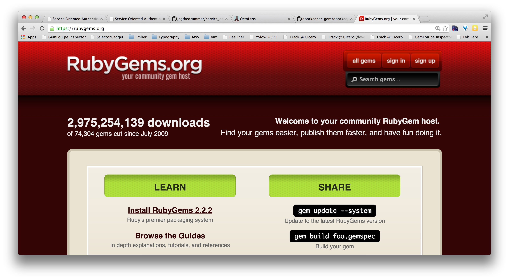
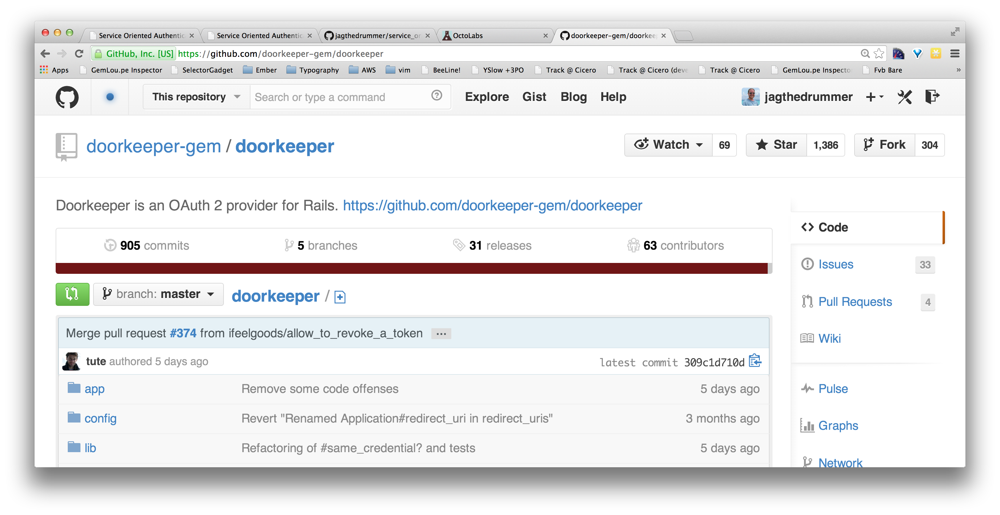
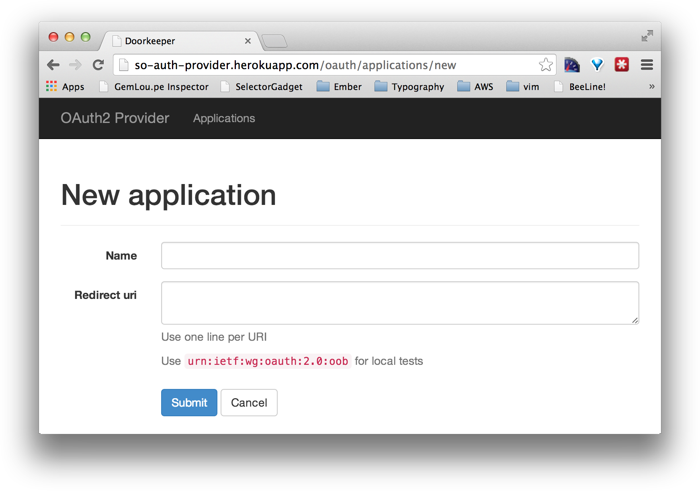

Service Oriented Authentication
SO Auth!
Wow
Very Architecture
Service Oriented Authentication
Service Oriented Authentication
Stumbling towards SOA
The story of CloudHDR
My original app

OAuth2

An open standard for delegated authorization
Now a collection of services

What if I can't split
everything up at once?

Start where you are
Add an OAuth provider
Add one service
SOA, FTW!

Introducing the Mc-SOA*
Monolith Centric
Service Oriented Architecture
*Not affiliated with McDonalds Corp in any way.
Outline
- Context, Goals & Requirements
- Introduction to SOAuth
- Implementation
A bit about me |
|
Jeremy Greendrummer, coder, entrepreneur, photographer, brewerorganizer of OkcRuby.org |
|

|
@jagthedrummer jeremy@octolabs.com http://www.octolabs.com/ |
CloudHDR
HDR Photo Processing Automation
You don't want this:


You want this!
Goals & Reqs
Goals & Reqs
- Small focused apps
- Single sign on/off
- Minimize code duplication
- Support a variety of app/service types
OAuth2
OAuth2


Demo
A Brief Intro to OAuth2
Or Maybe it's Review
Just a web client
GET /protected
Redirect #{provider}/authorize?client_id=123&state=yyz&response_type=code
GET #{provider}/authorize?client_id=123&state=yyz&response_type=code
Redirect #{consumer}/callback
?code=abc&state=yyz&response_type=code
GET #{consumer}/callback
?code=abc&state=yyz&response_type=code

POST /oauth/token?
client_id=123&client_secret=456&code=abc
{token:'42ab', refresh_token:'9876', uid:'jag'}
GET /me.json?token=42ab
{id:111, name:"Jeremy Green",
email:"jeremy@octolabs.com"}

Redirect /protected

GET /protected
200 OK /protected
Whew!
Seven request/response pairs
Seven!!
RubyGems.org to the rescue!
Provider Implementation
applicake/doorkeeper
Consumer Implementation
intridea/omniauth
The Plan
- Add
doorkeeperto an existing Devise app - Create a
so_authgem that wrapsomniauth
and delegates to the provider
- Use
so_authin service apps
The Real Plan
Step through the OAuth dance
building or integrating
the pieces that we need.
The first request/response
|
|
|
Consumer Implementation - Part 1
Consumer Implementation - Part 1
Entering the OAuth Dance
Consumer Implementation - Part 1
Create a rails engine called so_auth
$ rails plugin new so_auth \
--full \
-T \
--dummy-path=spec/dummy
Update so_auth.gemspec
Gem::Specification.new do |s|
#...
s.add_dependency 'omniauth', "~> 1.2.1"
s.add_dependency 'omniauth-oauth2', "~> 1.1.2"
#...
end
so_auth strategy for OAuth2
# lib/omniauth/strategies/so.rb
require 'omniauth-oauth2'
class OmniAuth::Strategies::So < OmniAuth::Strategies::OAuth2
option :name, 'so'
option :client_options, {
:site => ENV['AUTH_PROVIDER_URL'],
:authorize_path => '/oauth/authorize',
:access_token_path => '/oauth/token'
}
end
Register the strategy with omniauth
# spec/dummy/config/initializers/omniauth.rb
# If you need to pull the app_id and app_secret from a different spot
# this is the place to do it
APP_ID = ENV['AUTH_PROVIDER_APPLICATION_ID'] || "not_a_real_id"
APP_SECRET = ENV['AUTH_PROVIDER_SECRET'] || "not_a_real_secret"
Rails.application.config.middleware.use OmniAuth::Builder do
provider :so, APP_ID, APP_SECRET
end
(Create a generator for this)
Create some content in spec/dummy
spec/dummy $ rails g controller stuff private public
create app/controllers/stuff_controller.rb
route get "stuff/public"
route get "stuff/private"
invoke erb
create app/views/stuff
create app/views/stuff/private.html.erb
create app/views/stuff/public.html.erb
Protect some content
# spec/dummy/app/controllers/stuff_controller.rb
class StuffController < ApplicationController
before_filter :login_required, :only => [:private]
end
Update ApplicationController
# spec/dummy/app/controllers/application_controller.rb
class ApplicationController < SoAuth::ApplicationController
#...
end
so_auth ApplicationController
class SoAuth::ApplicationController < ActionController::Base
def login_required
not_authorized
end
def not_authorized
respond_to do |format|
format.html{
redirect_to "/auth/so?origin=#{request.original_url}"
}
format.json{ head :unauthorized }
end
end
end
The next request/response
|
|
|
Provider Implementation
Provider Implementation
Install and configure doorkeeper
# Gemfile
gem 'doorkeeper', '~> 1.1.0'
$ bundle install
$ rails generate doorkeeper:install
$ rails generate doorkeeper:migration
$ rake db:migrate
doorkeeper configuration
# config/initializers/doorkeeper.rb
Doorkeeper.configure do
# This should either return the current user
# or redirect to the sign in page.
resource_owner_authenticator do
current_user || warden.authenticate!(:scope => :user)
end
#...
end
OAuth application authorization
Get rid of it!
doorkeeper configuration
# config/initializers/doorkeeper.rb
Doorkeeper.configure do
# We want to skip the screen that asks
# "can application X use your profile?"
skip_authorization do |resource_owner, client|
true
end
#...
end
Hooray gems!
|
|
|
Browsers love redirects.
|
|
Hooray gems!
|
|
|
Hooray gems!
|
|
|
Pass user info to the consumer
# config/routes.rb
SoAuthProvider::Application.routes.draw do
#...
get "oauth/me" => "oauth/users#me"
#...
end
Pass user info to the consumer
# oauth/users_controller.rb
class Oauth::UsersController < ApplicationController
doorkeeper_for :all # sets doorkeeper_token or sends 401 error
respond_to :json
# GET /me.json
def me
respond_with current_resource_owner
end
private
# Find the user that owns the access token
def current_resource_owner
User.find(doorkeeper_token.resource_owner_id) if doorkeeper_token
end
end
Nearly done!
|
|
|
Consumer Implementation - Part 2
Consumer Implementation - Part 2
Exiting the OAuth Dance
so_auth strategy for OAuth2
# lib/omniauth/strategies/so.rb
class OmniAuth::Strategies::So < OmniAuth::Strategies::OAuth2
#...
def raw_user_info
@raw_user_info ||= access_token.get('/oauth/me').parsed
end
uid { raw_user_info['id'] }
end
so_auth strategy for OAuth2
# lib/omniauth/strategies/so.rb
class OmniAuth::Strategies::So < OmniAuth::Strategies::OAuth2
#...
info do
{
:email => raw_user_info['email'],
:admin => raw_user_info['admin']
}
end
extra do
{ :raw_user_info => raw_user_info }
end
end
so_auth routes
# config/routes.rb
Rails.application.routes.draw do
# ...
# omniauth callbacks
get '/auth/:provider/callback', :to => 'so_auth/user_sessions#create'
get '/auth/failure', :to => 'so_auth/user_sessions#failure'
end
so_auth UserSessionsController
class SoAuth::UserSessionsController < SoAuth::ApplicationController
# omniauth callback method
def create
omniauth = env['omniauth.auth']
user = User.find_or_create_by(:id => omniauth['uid'])
if user.respond_to?(:email)
user.email = omniauth['info']['email']
end
user.save
session[:user_id] = user.id
redirect_to request.env['omniauth.origin'] || root_path
end
#...
end
so_auth UserSessionsController
class SoAuth::UserSessionsController < SoAuth::ApplicationController
#...
# Omniauth failure callback
def failure
flash[:notice] = params[:message]
redirect_to root_path
end
end
so_auth ApplicationController
class SoAuth::ApplicationController < ActionController::Base
#...
def current_user
return nil unless session[:user_id]
@current_user ||= User.find_by_id(session[:user_id])
end
def signed_in?
current_user.present?
end
helper_method :signed_in?
helper_method :current_user
end
so_auth ApplicationController
class SoAuth::ApplicationController < ActionController::Base
def login_required
not_authorized unless current_user
end
#...
end
Hooray gems! And so_auth!
|
|
Single sign off
Single sign off (Provider side)
class Oauth::SessionsController < Devise::SessionsController
def set_user_cookie(user)
cookies[:so_auth] = { :value => user.id,
:domain => env_domain }
end
def remove_user_cookie
cookies.delete(:so_auth, :domain => env_domain)
end
def env_domain
domain = ENV['COOKIE_DOMAIN'] || "localhost"
domain == "localhost" ? :all : domain
end
#...
end
Single sign off (Provider side)
# config/routes.rb
SoAuthProvider::Application.routes.draw do
#...
devise_for :users,
:controllers => {:sessions => "oauth/sessions"}
#...
end
Single sign off (Provider side)
class Oauth::SessionsController < Devise::SessionsController
def create
super {|resource| set_user_cookie(resource) }
end
def destroy
super {|resource| remove_user_cookie }
end
#...
end
Single Sign Off (Consumer side)
class SoAuth::ApplicationController < ActionController::Base
before_filter :check_cookie
def check_cookie
reset_session unless cookie_valid?
end
def cookie_valid?
cookies[:so_auth].present? &&
session[:user_id].present? &&
cookies[:so_auth].to_s == session[:user_id].to_s
end
#...
end
Single Sign Off (Consumer side)
# config/routes.rb
Rails.application.routes.draw do
# Custom logout
post '/logout', :to => 'so_auth/user_sessions#destroy'
end
Single Sign Off (Consumer side)
class SoAuth::UserSessionsController < SoAuth::ApplicationController
#...
# logout - Clear our rack session BUT importantly redirect
# to the provider to clean up the there too!
def destroy
reset_session
redirect_to "#{ENV['AUTH_PROVIDER_URL']}/users/sign_out"
end
end
so_auth usage
so_auth usage
$ rails new so_auth_consumer -T --database=postgresql
# Gemfile
# development
gem 'so_auth', path: "../so_auth"
# for deployment
gem 'vendorise', group: :development
# rake "vendorise:gem[git@github.com:jagthedrummer/so_auth.git]"
gem 'so_auth', path: "vendor/gems/so_auth"
$ rails generate so_auth:install
create config/initializers/omniauth.rb
# If you need to pull the app_id and app_secret from a different spot
# this is the place to do it
APP_ID = ENV['AUTH_PROVIDER_APPLICATION_ID'] || "not_a_real_id"
APP_SECRET = ENV['AUTH_PROVIDER_SECRET'] || "not_a_real_secret"
Rails.application.config.middleware.use OmniAuth::Builder do
provider :so, APP_ID, APP_SECRET
end
Register your new consumer with so_auth_provider

Take note of your
Application Id and Secret
Set up some environment variables
AUTH_PROVIDER_URL=http://localhost:3000
AUTH_PROVIDER_APPLICATION_ID=1234
AUTH_PROVIDER_SECRET=5678
Create a User model
$ rails generate model user email:string
$ rake db:migrate; rake db:test:prepare
Protect some content
# app/controllers/some_controller.rb
class SomeController < ApplicationController
before_filter :login_required, :only => [:private_stuff]
end
Repos
https://github.com/jagthedrummer/so_auth_provider
Wrap Up
Start where you are
Add an OAuth provider
Add one service
Thanks For Watching!
|
@jagthedrummer jeremy@octolabs.com |
|
SOAuth & Login with _____
The plan
The plan
The plan